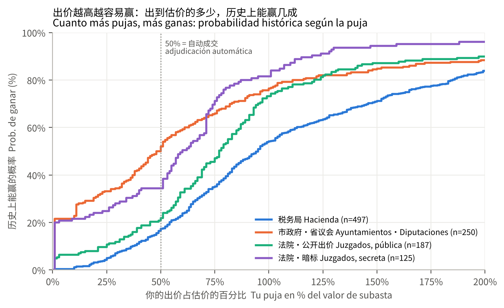

¿Qué suele pasar en las subastas? Datos propios del BOE (vehículos, 11-2025 a 11-2026) y del Tribunal de Cuentas (Seguridad Social)
2025-11-01 到 2026-11-20 结束的 851 场车辆拍卖，共 1.061 辆车或拍品；登录后看到的最后最高出价，按估价的百分比。851 subastas de vehículos cerradas (1.061 coches o lotes); puja más alta vista con sesión, en % del valor de subasta.
| 拍卖类型Tipo | 车/拍品Coches/lotes | 没人出价Sin pujas | 一般出价（中位数）Mediana | 中间一半50 % central | ≥ 估价 50%≥ 50 % valor | ≥ 估价 100%≥ 100 % valor |
|---|---|---|---|---|---|---|
| 税务局Hacienda | 497 | 0,4% | 94% | 62–164% | 83% | 46% |
| 市政府·省议会Ayuntamientos·Diputaciones | 250 | 21,6% | 63% | 38–116% | 61% | 30% |
| 法院·公开出价Juzgados, pública | 187 | 4,8% | 78% | 57–107% | 82% | 28% |
| 法院·暗标Juzgados, secreta | 125 | 18,4% | 70% | 52–88% | 80% | 23% |
后两列只算有人出价的。Las dos últimas columnas, solo entre las que tuvieron pujas.
| 估价Valor | 车Coches | 一般出价Mediana | 中间一半50 % central | ≥ 估价 100%≥ 100 % |
|---|---|---|---|---|
| < 3.000 € | 84 | 157% | 70–254% | 65% |
| 3.000–10.000 € | 253 | 105% | 58–176% | 52% |
| 10.000–20.000 € | 120 | 77% | 60–100% | 25% |
| ≥ 20.000 € | 40 | 85% | 76–103% | 30% |
便宜的车（估价 < 3.000 €）一般出到估价的 1,5 倍以上；10.000–20.000 € 的车最容易低于估价拿到。Los baratos (< 3.000 €) suelen acabar por encima del 150 %; los de 10.000–20.000 € son los que más se quedan por debajo del valor.

审计法院（Tribunal de Cuentas）对 2021 年的检查：全国 5.129 个拍品里 1.870 个流拍（36,46%）；1.569 个暂停，其中 65,14% 是因为欠债的人还了钱。抽查的省份里成交的比例：马德里 57,14%、巴塞罗那 42,86%、瓦伦西亚 61,29%。流拍后的直接出售，马德里最低 10%、巴塞罗那 25%，瓦伦西亚没有最低价（平均 23,87%），但 52%–70% 的直接出售也没卖出去。车占拍品的 24,02%。Tribunal de Cuentas (2021): 1.870 de 5.129 lotes desiertos (36,46 %); 1.569 suspendidos (65,14 % por pago de la deuda); adjudicadas en las muestras: Madrid 57,14 %, Barcelona 42,86 %, Valencia 61,29 %; venta directa tras quedar desierta con mínimos del 10 % (Madrid), 25 % (Barcelona) o sin mínimo (Valencia, media 23,87 %), aunque el 52–70 % de los intentos no se vendió. Los vehículos fueron el 24,02 % de los lotes.
出价机会 / Oportunidades · 所有拍卖车 / Todas las subastas · 首页 / Inicio